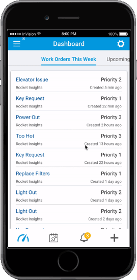

INRIX
Designed and implemented platform for autonomous vehicle data management in cities across the globe
User Research, UX Design, Wireframing, Prototyping

A midsized Boston-based company utilizing a platform that simplifies and organizes property management, allowing for mobile access, expedited work orders, and increased and timely communications.
Building Engines’ user base was growing however its platform remained a relic from its early days: static in its aesthetic, lacking in its features, and misorganized in its architecture, it was in need of an overhaul.
After being brought on to design a new platform, an initial audit was performed to assess which key elements were to be focused on considering the project timeline and contract length. Additionally, internal Building Engine team members and external clients were interviewed to gain further insight into what worked and what could be improved upon in the existing platform.
Undertaking the task of redesigning the complete platform required tearing down the existing idea of how the platform was used and rebuilding it from a user perspective. This was both important for existing users in order to use the platform more efficiently as well as helping new users easily navigate the platform from the onset. To achieve this, I designed and prototyped an onboarding element that would easily walk a new user through an introduction to the platform, including asking for the appropriate information to make them not feel overwhelmed. The existing platform was also rebuilt into a more organized structure: removing and combining submenus that were redundant or no longer needed, consolidating lists into a single unified menu-structure, and presenting clear call to actions and useful tools without digging into unnecessary submenus.
The second important factor was reutilizing the dashboard into a more meaningful commodity. After interviewing users of various roles if was determined that a flexible dashboard would be the most helpful, customizable to each user on the platform depending on his or her role within a building’s management. Additionally, it was clear that users came to the platform routinely through the day and wanted to be able to see certain information at a quick glance, rather than navigating through various pages. With this information we created a widget-based dashboard that allowed users to pin the most important information to each of them to their own personal view. Users could be presented with the information they needed most, with additional customization available as their needs grew.

The third aspect of improvement was aesthetic-focused. The existing site felt static, heavily gray-toned, and overstuffed with menus and dated graphics. Because of the inevitable volume of information a user would need to see we incorporated a largely utilizing white space to provide the feeling of a clutter-free work environment. Corners were rounded, fonts were modernized, separating lines were thinned, and icons were simplified. Menus which clogged the screen were condensed into a side panel with a simple tiered approach and a more defined hierarchy. Color was also used strategically to highlight important aspects that needed the user’s attention such as notifications, warnings, and error messages.
The result of the overhaul was dramatic and vastly improved the time to completion of tasks by the platform’s users. More time could be spent dealing with property owners and tenants, and less navigating the site to find the information they were searching for. The overall look and feel of the redesigned site was also much more aligned with a site a user would encounter in the modern day.
Designed and implemented platform for autonomous vehicle data management in cities across the globe
User Research, UX Design, Wireframing, Prototyping

Optimized method for increasing time and accuracy among delivery drivers
UX Design, Wireframing, Prototyping

Lead designer, in charge of in-house design endeavors. Projects included reimagining the gamification of the platform, designing a methodology for user-created campaigns, and prototyping a unified-modules application.
User Research, UX Design, Wireframing, Prototyping